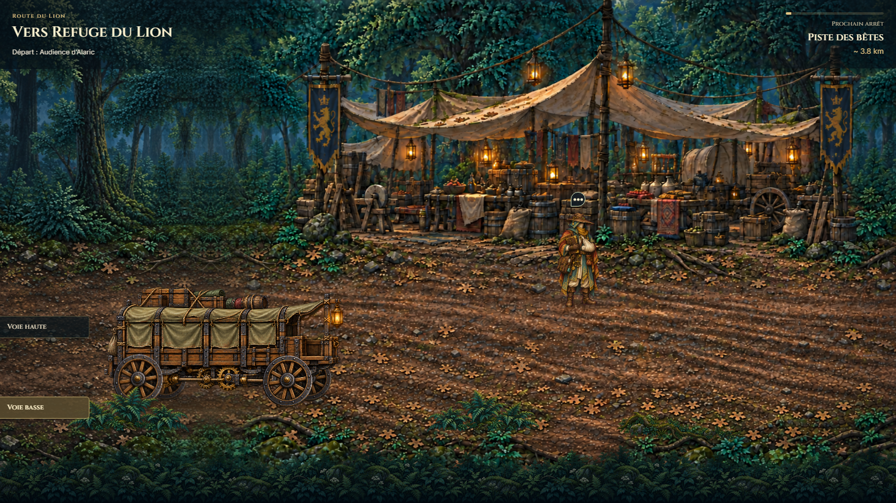
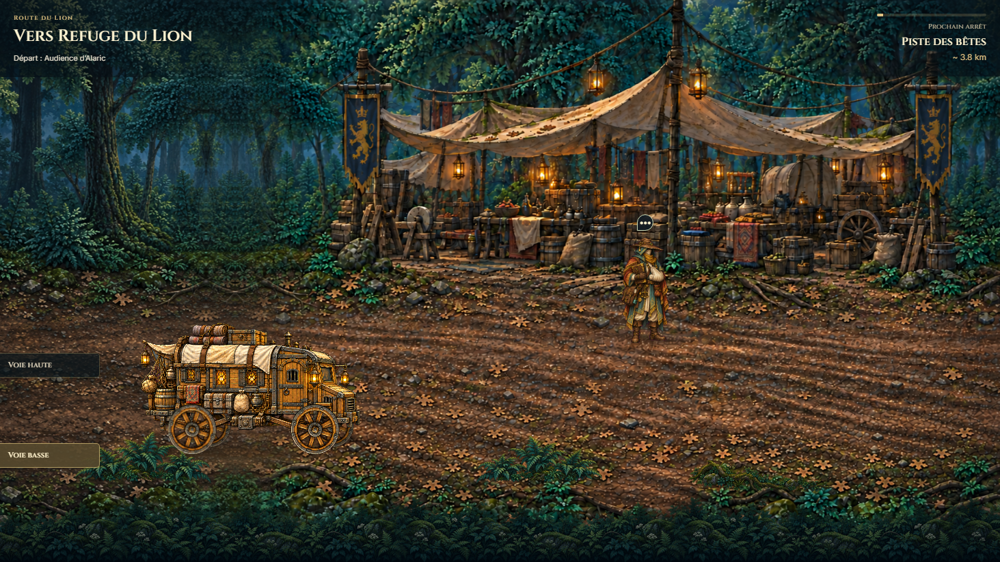
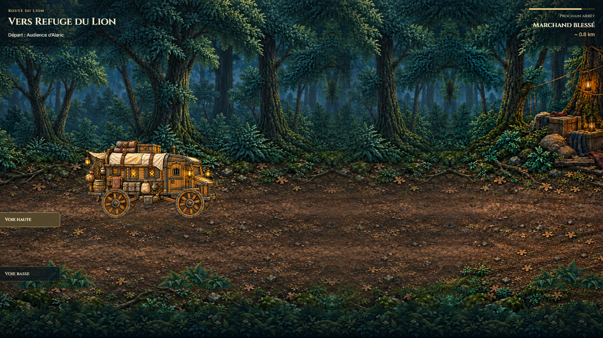
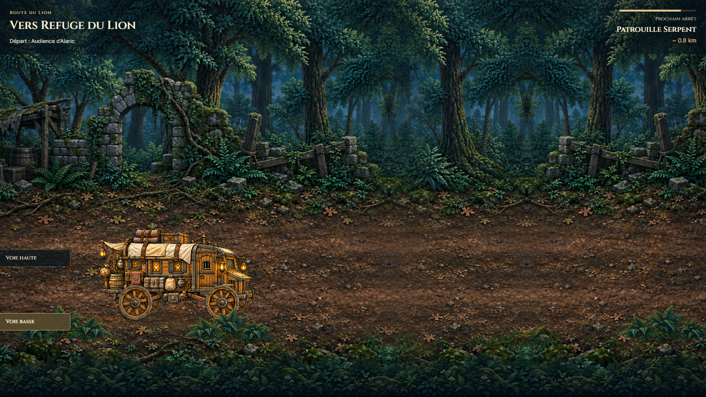

T0 preview · production disabled · uncommitted
One continuous fantasy journey
Closed mechanical caravan, four distance-driven wheels, retained upper-lane narrative locations and lower-lane foreground depth. Both selected roads now lead to a mandatory consequence through canonical campaign authority.
Engineering report · Validation and asset hashes · Image prompts and provenance
Previous and final vehicle

Previous runtime at the start of this pass.
Enclosed timber cabin, canvas, provisions, ironwork and lanterns.Depth and roadside locations
Two chosen roads

Route A: open woods leading to the damaged caravan encounter.
Route B: ruined outpost approach leading to mandatory combat.Complete Chromium journey
Includes actual dialogue and combat surfaces, direct pickups, route choice, branch consequence and destination handoff. Combat completion uses the existing QA victory control.
Environment-only seam scroll
Lower and upper depth review at both viewport sizes
Visual sign-off remains with the operator. Existing media and Character System V2 sources were preserved. NarrativeStage/TRAVEL_STILL migration is separate.